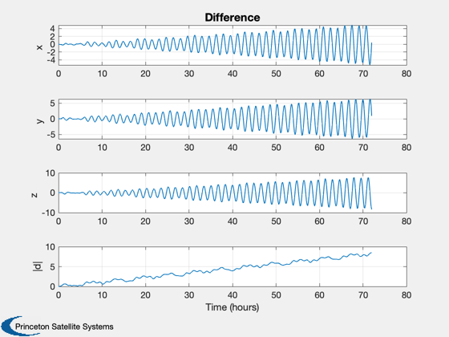
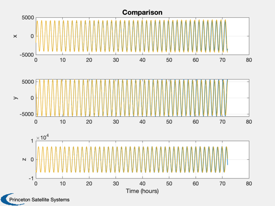

Test ComputeTLE
------------------------------------------------------------------------
See also Plot2D, TimeLabl, Mag, RK45, Date2JD, LoadGEM, ComputeTLE,
NORAD, RV2El, RVFromKepler
------------------------------------------------------------------------
r = [-1799.56322;3883.60987;-5632.97758];
v = [4.03338703;-4.52428114;-4.4128827];
elOsc = RV2El(r,v);
jD0 = Date2JD([2001 2 13 0 0 29]);
[sO, c, j, mu, a] = LoadGEM(1);
sTLE = ComputeTLE( elOsc, jD0 );
tVec = linspace(0,3*86400,500);
[rK,vK] = RVFromKepler( elOsc, tVec );
rV = NORAD( tVec, [], [], 'SGP4', [], sTLE );
sOrig = [sprintf('SGPTest \n'),...
sprintf('1 00000U 1044.00033565 .00001712 00000-0 00000-0 0 18\n'),...
sprintf('2 00000 98.1516 305.7348 0006329 85.2914 148.1408 14.62292261 00')];
drag = 0;
xP = zeros(6,length(tVec));
x = [r;v];
h0 = tVec(2)-tVec(1);
h = h0;
for k = 1:length(tVec)
jD = jD0 + tVec(k)/86400;
xP(:,k) = x;
[x,h] = RK45( 'FOrbHF', x, h, h0, 0.05*h, 1e-10, tVec(k), [4 4 0 0 drag],jD, [0;0;0], mu, sO, c, j, a );
end
diff = xP(1:3,:) - rV.r;
[tPlot,tL] = TimeLabl( tVec );
Plot2D( tPlot, [diff;Mag(diff)], tL, {'x','y','z','|d|'}, 'Difference' )
Plot2D( tPlot, [rK;xP(1:3,:);rV.r], tL, {'x','y','z'}, 'Comparison',...
[],{[1 4 7],[2 5 8],[3 6 9]} )
 